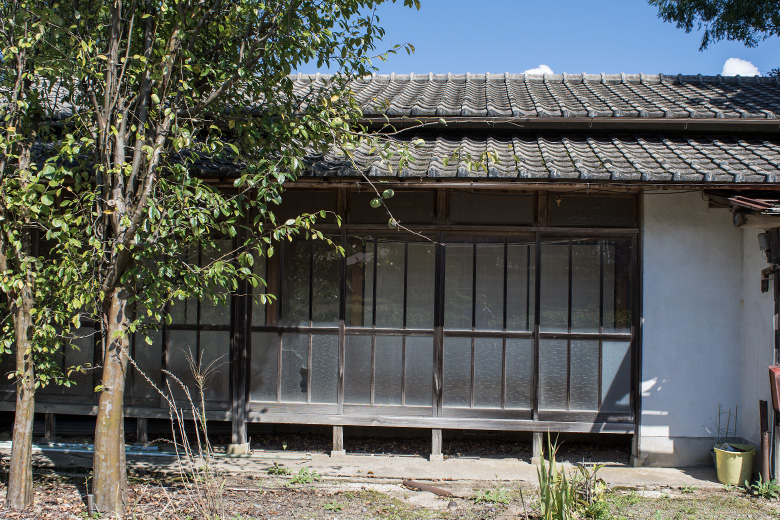
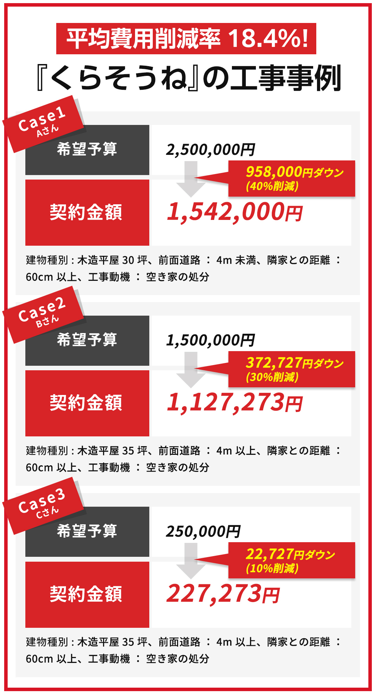
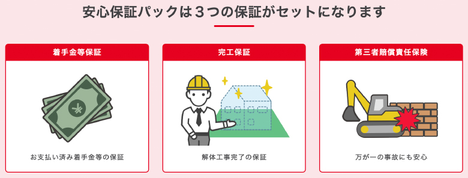

【注意】築３０年以上の空き家をお持ちの⽅へ

京都市で空き家を取り壊す「⾏政代執⾏」が⾏われました。
先日、京都市左京区で倒壊する恐れのある空き家の解体工事が【行政代執行】で行われました。
行政代執行とは、自治体が所有者に代わって強制的に実行に移すこと。京都市左京区のこの空き家は持ち主不明で、長らく空き家として放置されていたため損傷が激しく、屋根や壁が崩落していました。
近隣住民の通報を受け、倒壊する恐れがあると自治体が判断し、行政代執行に踏み切りました。
「⾏政が解体したら、費⽤ってどうなるの?」
「自治体が解体してくれるの？ラッキー！」と思ってしまってはいけません。この解体費用はしっかりと所有者に請求されますので、誤解のないよう。
しかも、自分で解体工事を手配するよりも高い金額を請求され、結局は大損になってしまいます。場合によっては相場の2倍近くの費用を請求されてしまうケースもあり、「こんなことなら自分でさっさと手配すれば良かった…」ですよね。
「うちも古い空き家を持っているけど、⼤丈夫なのかな?」
空き家率が年々上昇している日本で、「うちも古い空き家持ってるんだよなあ…」という人はかなりたくさんいらっしゃると思います。そんな皆さんが不安を抱えてしまうようなニュースですよね。
では、どのような空き家が行政代執行のターゲットにされてしまうのでしょうか。
それはズバリ、損傷の激しい空き家です。
家というのは、人が住んでいればそれほど傷みの進行は早くありません。しかし、人が住まなくなると急速なスピードで劣化していきます。
傷みが激しくなる目安としては、築30年以上で、空き家管理がされていない建物です。月に一度は家の空気を入れ替えて湿気を逃がし、伸びた雑草や植物を刈り取って虫が寄り付きにくくするなど、空き家の損傷スピードを遅らせるために管理しておくことが不可欠です。
このような管理をせずに長く放置してしまうと、「特定空き家」として指定されてしまいます。
「特定空き家」に指定されると税金が3倍?6倍?!
「特定空き家」に指定されてすぐに行政代執行が行われるわけではありませんが、大きなデメリットが存在します。それは「固定資産税と都市計画税の大幅アップ」です。
土地に建物が建っている状態ですと、軽減税率が適用されて固定資産税と都市計画税が安くなります。固定資産税は土地評価額を1/6にした金額に課税され、都市計画税は土地評価額を1/3にした金額に課税されます。
しかし、特定空き家に指定されるとそれらの軽減税率が適用されなくなりますので、税金は一気にアップ。
それぞれ建物を省いた土地だけの固定資産税だと6倍、都市計画税は３倍にも増えてしまいます。
「特定空き家」に指定される前に⾏動しておくことが⼤切
空き家だからといって放置せず、定期的な管理を続けておくことが「特定空き家」に指定されないためにできる唯一のことです。
管理とは、月に一度、換気、通水、掃除をすること。窓をすべて開けて湿気を逃がし、すべての蛇口を数分間開けっ放しにして、家の中はもちろん、外側も含めて掃除をします。
中には、持っている空き家が遠く離れた場所にあったり、身内では人手が足りないという場合もあると思います。その場合は空き家管理をしてくれる専門の業者がいますので、空き家の近くにある業者を探して依頼しましょう。
「毎⽉１回も空き家の管理なんてできない…」
このように、管理もせず空き家を放置しておくと様々なデメリットが待っていますし、かといって誰かが住む予定もない空き家を毎月管理するというのもそう簡単なことではありません。
つまり、使用する予定のない空き家はなるべく早めに解体してしまうのがいちばん。
「でも、解体工事っていくらぐらいかかるんだろう…」
そう思った方はまずは見積りを取って相場を知ってみましょう。【くらそうね】ならわずか1分で数社に見積り依頼をして、気軽に解体費用の比較をすることができます。
複数社⽐較で、解体費⽤は最⼤４０％ダウンも
【くらそうね】の簡単見積りサービスを使うと、1分程度の簡単な入力だけで複数社に見積りを依頼して、解体費用を比較することができます。
自分で探すよりも手間が省ける上に、最大で工事費用が40%以上ダウンした方も。

安心保証パックで、トラブルにも完全対応
万が一の事故やトラブルが起きた場合でも、【くらそうね】なら安心の保証制度が無料でついてきます。
例えば、依頼した工事会社が工事中に倒産してしまった場合、既に支払っていた着手金はくらそうねが負担いたします。

工事完了までカスタマーサポートがお手伝い
慣れない解体工事で疑問や不安がたくさん…という方のために、【くらそうね】のカスタマーサポートが 見積りから工事完了まで、しっかりお手伝いさせていただきます。
解体費用に関すること、見積書の見方、値引き交渉のコツ、工事中のお悩みに、サポートスタッフがお答えします。
登録会社は国内最大級、顧客満足度は96.7%！
1,000社以上という国内最大級の登録会社数の中から、ご予算・条件・ご要望にピッタリ合った解体工事会社をご紹介いたします。
１分程度の簡単入力だけで、複数社から見積もりを取れるので、自分で工事会社を探す手間はありません。
見積もりをとっても営業電話やメールは一切いたしませんので、安心してお見積もりください。